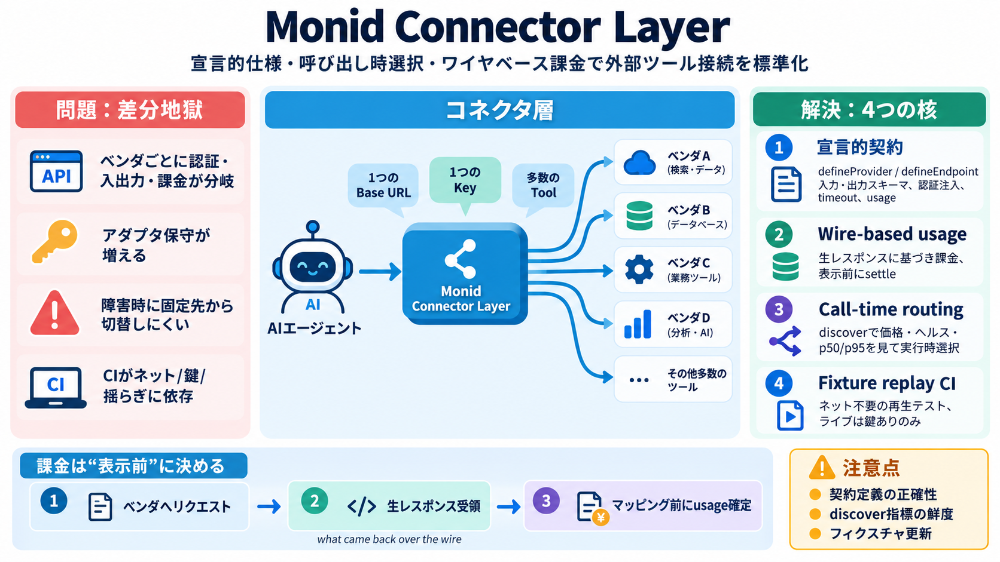

Monid: OpenRouter for agent tools
Monid # Monid ## OpenRouter for agent tools 2.2K followers ## OpenRouter for agent tools 2.2K followers Monid was …

Monid # Monid ## OpenRouter for agent tools 2.2K followers ## OpenRouter for agent tools 2.2K followers Monid was …
Skip to content NotisNotis LoginStart free Dark Notis-branded diagram: one agent node routed through a switchboard in…
Per-call — flat fee per execution (e.g. `$0.003 / call`) Per-result — fee per item returned, with an optional base fee …
> ## Documentation Index > > Fetch the complete documentation index at:</docs/llms.txt> > > Use this file to discover al…
### Description 14429 views Posted: 23 Aug 2026 If you’re building with AI agents like Claude Code or Codex, you know th…